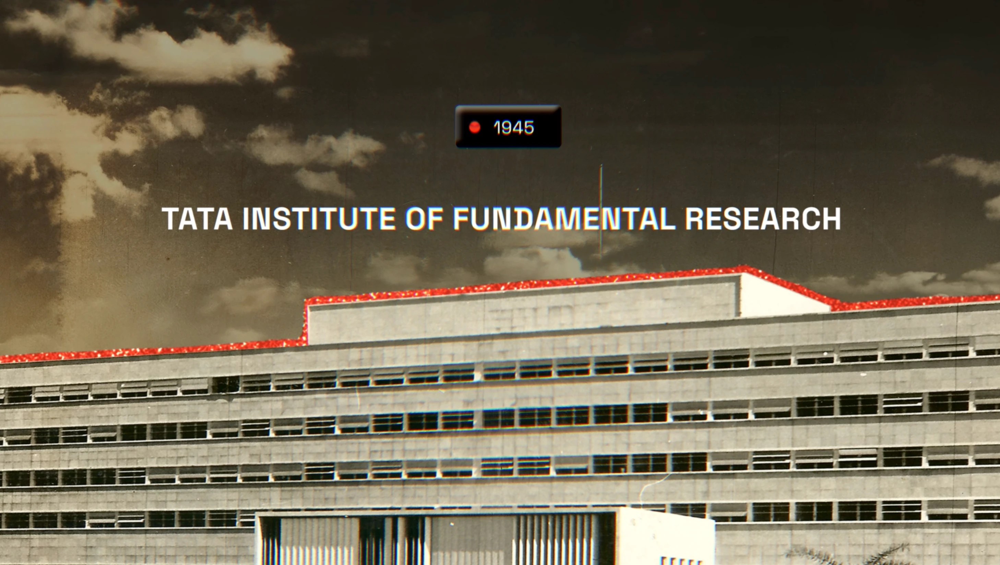
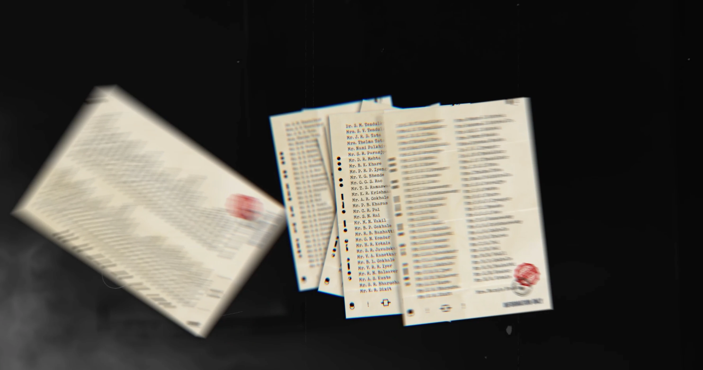
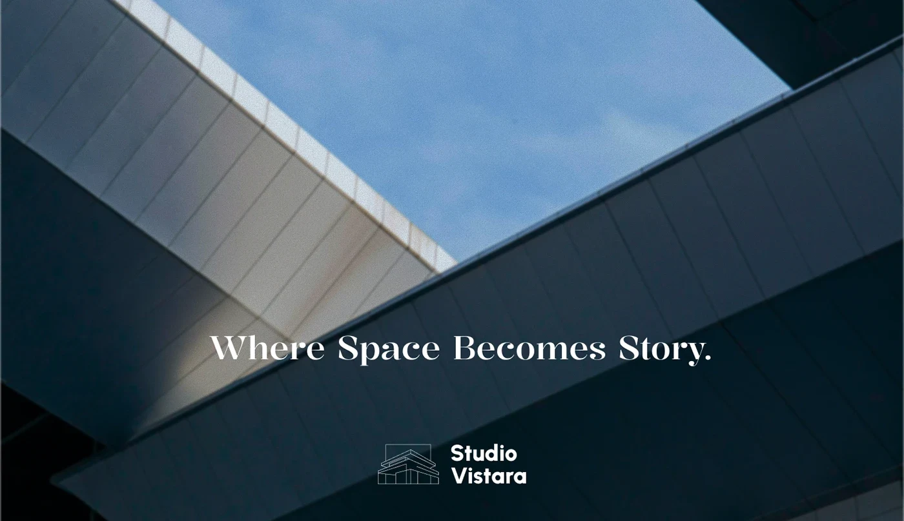

I don’t design from templates. I build from first principles.
Coming from civil engineering into documentary film direction and brand systems fundamentally changed how I view visual design. I do not treat a screen or page as a blank canvas for cosmetic decoration. I treat it as an engineered structure designed to carry human attention under stress.
Clear steps through the chaos.
Calculate the loads before choosing the paint.
In civil engineering, if your load calculations are wrong, the bridge collapses. Digital interfaces and brand identities behave the same way, just with attention instead of concrete. Before touching typography, color, or micro-interactions, I identify the hierarchy under stress: what is the single message that must survive, where the eye lands, and what can be removed without losing the core idea.
Directing viewport momentum like a film sequence.
Directing documentary projects at Prachyam taught me that human beings don’t experience visual work statically; they experience it through pacing, focal length, and atmospheric tone. A website shouldn't shout at 100% volume across every viewport. It requires wide establishing shots, intimate details, breathing room, and controlled momentum.

00:04:28
00:08:52If it only looks good in Figma, it doesn’t work in reality.
A vector on a glowing backlit display is deceptive: it has zero mass, no friction, and no ambient shadow. When creating brand identities, packaging, and editorial publications, I test marks where they will actually be touched: on 120gsm uncoated paper, cast concrete walls, exterior signage, and physical book spreads.
Больше, чем коробка.
MORE THAN A CONTAINER / 2026Spatial Verification
Evaluating letterforms against natural sunlight, concrete textures, and varying viewing distances before declaring a guideline complete.
Tactile Degradation
A resilient identity survives low-contrast photocopies, embroidered stitches on canvas, and low-res mobile avatars without collapsing.
Substrate Friction
Screen vectors have no weight. Print demands calculating ink absorption, paper bulk, and tactile texture from day one.

STUDIO VISTARA · PHYSICAL SIGN-OFF
The brand geometry tested directly against cast architectural concrete and natural ambient shadows.
Complex B2B workflows without the enterprise ugliness.
At WizCommerce, I design for wholesale commerce—an industry handling millions in transaction volume, thousands of catalog SKUs, and fast-moving sales reps. The lazy approach to enterprise design is hiding complexity behind ten nested popups. My approach is organizing density with uncompromising typographic discipline: power users work at speed, and new users never feel overwhelmed.
Hierarchical Contrast
Actionable data is highlighted; secondary metadata recedes. Density is managed through optical weight, not blank panels.
Human Storytelling in B2B
B2B buyers are human beings. Enterprise products deserve the same aesthetic care, motion physics, and tactile polish as consumer products.
AI creates fifty options in an hour.
Taste knows which forty-nine to delete.
I do not romanticize doing manual grunt work when software can accelerate exploration. I actively integrate AI models for rapid mood panels, texture generation, and variant testing. But the danger of AI-driven design is that everything looks 80% finished and 100% generic. That remaining 20%—the exact typographic kerning, the refusal to use a cliché, the human perspective—is where real taste lives.
VERIFIED
2026
Rapid generation of variant layouts, concept explorations & imagery.
Human judgment, typographic craft & ruthless elimination of noise.
Direct collaboration. Zero intermediary agency layers.
When you work with an agency, you brief an account director, who briefs a strategist, who briefs a junior designer. By the time the work reaches the screen, the soul has been squeezed out of it.
You work directly with the designer making the creative choices. Decisions happen in real time, not through weekly status decks.
Ideas are validated in actual browser code, uncompressed video frames, and interactive components early in the process.
No 60-page PDF strategy presentations filled with buzzwords. Every hour of work is spent on artifacts that can actually ship.
Have an idea, brand, or film that needs weight?
Let’s talk about design lead roles, brand identities, film art direction, and digital systems.
Structure first.
Texture second.
Decoration never.
When clients look at good design, they feel the craftsmanship immediately, but they rarely know why. It is because underneath the typography and color lies a rigid structural load: balanced tension, calibrated contrast, and zero cosmetic filler.
Like a classical statue cast with modern halftone rasters and torn ledger forms, every project blends timeless editorial proportion with contemporary digital utility.
Strip everything cosmetic until only the bone remains.